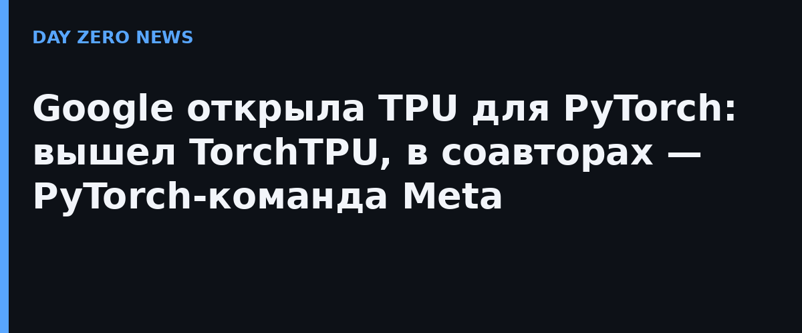

Google опубликовала TorchTPU как open source — нативный бэкенд PyTorch для своих тензорных процессоров TPU. Код лежит на GitHub (репозиторий google-pytorch/torch_tpu), а TPU официально встают в один ряд с GPU и CPU как «родная» площадка для PyTorch. Стек разрабатывали вместе с PyTorch-командой Meta — это заметно по дизайну: обычный цикл eager-отладки, затем torch.compile с оптимизированным графом, распределённые примитивы из коробки.
Google приводит конкретные метрики: обучение через TorchTitan на TorchTPU достигло до 52% Model FLOPs Utilization на модели Qwen 3 8B — примерно половина теоретической мощности чипов уходит в полезную работу. Заявлено почти линейное масштабирование (пропускная способность растёт пропорционально числу чипов) вплоть до 8192 ускорителей Ironwood последнего поколения. Вокруг бэкенда сразу развернули экосистему: поддержка в vLLM, SGLang, TorchTitan, Ray, TorchRec, библиотеках Hugging Face и LiteRT для устройств.
Hugging Face докрутила перенос до одного аргумента: в Transformers v5 достаточно передать device_map="tpu", а тестовый набор Transformers Google прогоняет на TPU каждую ночь. Отдельно вышла llm-d 1.0 — open-source-маршрутизатор запросов для кластеров, сделанный с Red Hat и IBM; один из клиентов, Zenteiq.ai, сообщает о росте выдачи с 1,47 до 5,97 млрд токенов в сутки на 1000 чипов TPU v6e — почти в четыре раза.
Две части стека пока в превью: бэкенд для фреймворка RL-обучения VeRL и агентский набор для ИИ-инструментов кодинга, который берёт на онбординг, диагностику и тюнинг инференса. Смысл анонса шире библиотеки: PyTorch исторически «пришит» к CUDA, и главный аргумент против альтернативных чипов — переписывать код. Если обещанное «с минимальными правками» подтвердится на практике, у компаний появляется реальная возможность тестировать железо Google, не перестраивая софтовый стек.
Meta, соавтор проекта, уже заявляет, что гоняет на TPU через TorchTPU LLM-нагрузки, рекламу и рекомендации в ключевых продакшен-сценариях. Директор PyTorch-инженерии Meta Яна ван Грюнен сформулировала позицию коротко: нельзя быть заложниками одной аппаратной архитектуры.